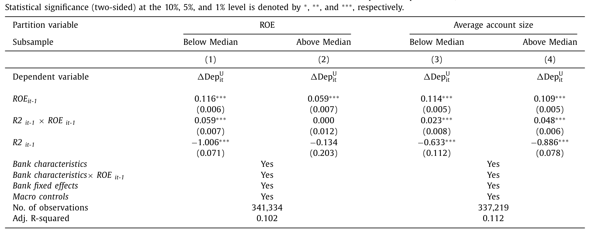
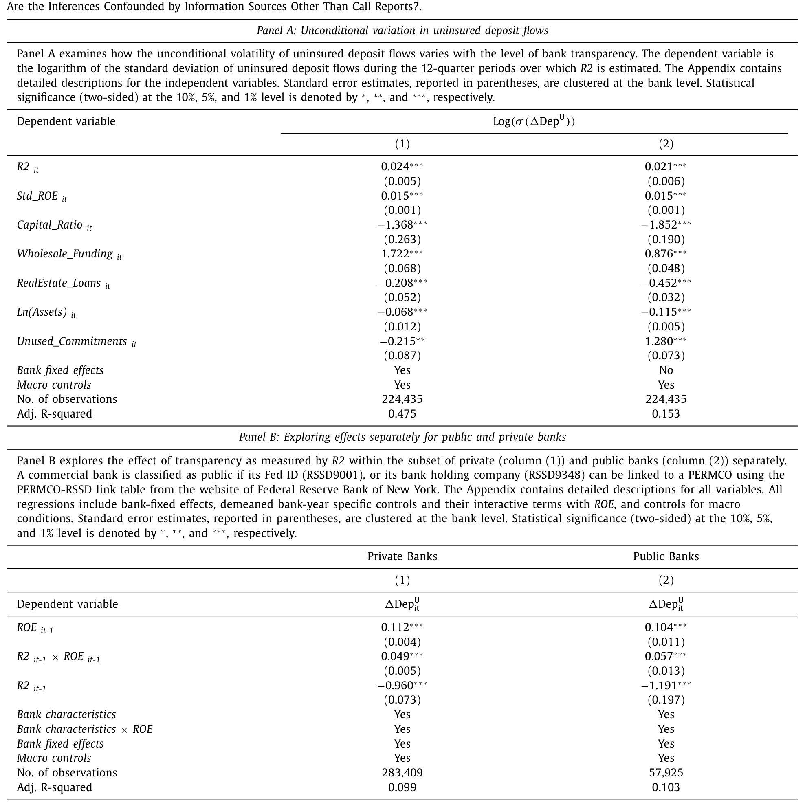
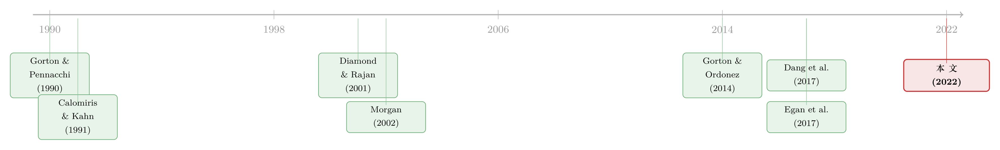

越透明，越脆弱？——存款人其实看得懂银行的财报
本文读的是 Chen, Goldstein, Huang & Vashishtha (2022, Journal of Financial Economics)：用一个基于「财报能多大程度预测未来违约」的 R² 透明度测度，作者发现——银行越透明，它的未保险存款（uninsured deposits）对经营业绩就越敏感（一个标准差的透明度提升，把这种「业绩-资金」敏感度抬高约 26%），而透明的银行要付更高的存款利率、更依赖内部资金、盈利更低。换句话说，透明并非只有好处：它削弱了存款作为「类货币安全资产」的那层功能。
1 一个被监管者和理论家撕扯的问题
先把张力摆出来。
2008 年危机之后，几乎整个银行监管的方向都指向同一个词：透明（transparency）。Basel III 要强化披露，让各类债权人能更好地监督银行的风险；危机后兴起的压力测试，更是直接给银行压上了一大堆新的信息披露义务。逻辑似乎天经地义——银行的资产（那些风险贷款）天生看不清，多晒一点信息，市场就能多监督一点，系统也就更安全一点。
可偏偏在同一个时代，一批最聪明的理论家给出了相反的告诫。Dang, Gorton, Holmström 和 Ordoñez 在 2017 年那篇 Banks as Secret Keepers 里说：不透明（opacity）恰恰是银行的本事所在。银行之所以能把存款做成一种「类货币」（money-like）的安全资产，让你我把它当现金一样随时取用、从不质疑它今天到底值不值一块钱，正是因为没人去深究它背后那一篮子贷款的真实质量。一旦信息变得「敏感」——也就是稍有风吹草动，大家就要重新给存款定价——存款也就不再像货币了。按这个逻辑，透明反而会毁掉银行最核心的产品。
这就是全文要反复讲透的那一个核心：透明度对银行是一把双刃剑。它也许能买来「监督」，但要付出「流动性供给」的代价。这篇论文做的，就是把这两面里实证上一直缺席的那一面——存款人到底在不在乎、看不看得懂——给量出来。
接着，一个自然的问题是：存款人，真的会理会银行财报里的信息吗？
直觉上很多人会摇头。存款人常被描绘成「不上心、也没本事」读懂银行报表的一群人——毕竟银行的主要披露（Call Reports，即监管报表）又长又复杂（Morgan, 2002 早就抱怨过）；更何况，反正有存款保险和「政府兜底」的预期在，一个普通储户凭什么要花时间去啃这些数字？Drechsler 等人（2017）甚至论证说，正是存款人的「不老练」，给了银行赚取更高利差的市场势力。
可是别忘了，存款人是银行最重要的债权人。按 Hanson 等人（2015）的估计，他们提供了银行 70% 以上的资金。如果连这群人的行为都不受透明度影响，那监管者强推披露的整套逻辑就要打个问号；可如果他们其实看得懂，那 Dang et al. 担心的那个代价，就是真金白银的代价。这是一个纯粹的实证空白——而填补它，需要先解决一个棘手的前置问题：怎么测量一家银行的透明度？
2 把「透明」翻译成一个 R²
这是全文最关键、也最优雅的一步。
作者没有去数银行披露了多少页、开了几次电话会，而是直接问一个更本质的问题：银行公布的业绩数字，到底能在多大程度上帮你预判它未来的贷款违约？ 财报越能预测违约，存款人获取信息的成本就越低，这家银行就越透明。这与 Dang et al. (2017) 把透明度建模为「存款人获取资产未来表现信息的难易/成本」是一脉相承的。
形式化地，设一家银行持有一篮子固定利率贷款，到期（无违约时）将偿付 \(P_{t+1}\)；令 \(\tilde{D}_{t+1}\) 为 \(t+1\) 期实际发生的违约额，则贷款组合的真实价值是 \(\tilde{V}_{t+1}=P_{t+1}-\tilde{D}_{t+1}\)。存款人在 \(t\) 期从 Call Reports 里获得的信息记作 \(\Omega_t\)。那么这份信息的质量，就可以用它消解掉的未来违约不确定性的比例来衡量：
这个比值有个再熟悉不过的名字——回归的 R²。在信息论里，一个变量 \(Y\) 对 \(X\) 揭示了多少信息，由二者的互信息（mutual information）刻画；而 Veldkamp（2011）指出，回归 R² 正是互信息的一个标度版本（Roll, 1988 著名的总统演讲也是在这个意义上用 R²）。于是「透明度」这个抽象概念，被一刀切成了一个可以逐家银行、逐个季度估出来的数字。
具体怎么估？作者用每家银行过去 12 个季度的数据，跑下面这条回归，取其调整后的 R²（下文就叫它 R2）：
$$ WriteOf\!f_t = \alpha_0 + \sum_{k=1}^{2}\big(\delta_k\,EBLLP_{t-k} + \beta_k\,LLP_{t-k} + \gamma_k\,\Delta NPL_{t-k}\big) + \rho\,Capital_{t-1} + \varepsilon_t $$
这里被解释变量 \(WriteOf\!f_t\) 是未来的贷款核销（write-offs，违约的实际兑现）；解释变量是财报里那些公认能预测违约的科目：拨备前盈利 \(EBLLP\)、贷款损失拨备（loan loss provisions, \(LLP\)）、不良贷款变化 \(\Delta NPL\)，以及资本充足率 \(Capital\)。财报里的这些数字越能拟合出未来的核销，R² 越高，银行越透明。
有两个细节值得停下来体会。其一，低 R² 不等于高风险。R² 测的是「不确定性中可被消解的比例」，而不是不确定性本身（\(Var(\tilde D)\)）；数据里 R² 与核销波动率的相关只有 0.10。所以作者还专门控制了基本面波动，免得有人说结果只是「风险高的银行」在作怪。其二，一家银行 R² 低，可能是因为它的资产本就难以预测，也可能是管理层策略性地不充分披露。但从存款人的角度看，这两者没区别——他就是看不清。这恰恰是该测度的妙处：它量的是存款人能拿到的总信息，而不是管理层「愿意」透露的那部分。这也把它和会计文献里那些只测「管理层披露意愿」的测度（如 Beatty & Liao, 2011 用拨备及时性，Ng & Rusticus, 2020 用财报重述）区分了开来。
那么，这个看上去有点「会计味」的 R²，真的抓住了存款人能感知的信息吗？作者拿出了一个干净的验证：在能拿到股价的那约六分之一公众银行子样本里，R² 越高的银行，股票收益对盈利消息越敏感。也就是说，R² 高的地方，盈利数字确实更「有料」。这一步很重要——它说明 R² 不是一个会计黑箱，而是真有信息含量的特征。
3 识别策略：不是「因果」，而是「均衡关系」加一记 SOX
讲到这儿，必须把话说清楚：这篇论文的主体分析，不是一个传统意义上的因果识别。
作者很坦诚。他们的目标是刻画「透明度」与各种银行结果之间的均衡关系（equilibrium link）。是「银行透明、所以存款人更敏感」，还是「存款人本来就敏感、逼得银行更透明」？对他们想传递的核心信息——透明度对未保险存款流至关重要——其实无所谓，两个方向都指向同一个结论。当然，永远可能有遗漏变量同时驱动 R² 和敏感度；但大量控制变量、固定效应、以及前面那个对测度的验证，让这种担忧没那么致命。
更巧的是，作者还动用了保险存款与未保险存款的差异反应来堵漏。设想有人说：「低 R² 银行的未保险存款之所以更黏，是因为这些银行服务好。」可服务好这件事，应该对保险存款和未保险存款一视同仁。如果数据显示两类存款的反应截然相反，那「服务质量」之类的未观测特征就解释不了核心结果。这是一种很聪明的「安慰剂」式论证。
但真正关键的一步，是为了向因果再靠近，作者祭出了一个对透明度的外生冲击：2002 年的 萨班斯-奥克斯利法案 (Sarbanes-Oxley Act, SOX)。
SOX 是会计丑闻后对上市公司披露标准的一次重大改革。妙处在于：它的条款主要约束公众银行，而 Call Reports 数据里同时有公众银行和私人银行。于是天然地，作者可以做一个 双重差分 (difference-in-differences, DiD)——比较公众银行（处理组）相对私人银行（对照组）在 SOX 前后的行为变化。据作者所知，这个「公私同框」的角度此前还没人用过。
4 主要结果：存款人不仅在乎，还分得清「信息的质量」
现在揭晓。
核心结果是一个高度显著的正相关：R² 越高，未保险存款流对银行业绩的敏感度越强——尤其在业绩差的时候。量级也不小：R² 每提高一个标准差，这种「资金-业绩」敏感度上升约 26%。这意味着，当一家透明银行业绩变差，未保险存款跑得更快、更猛。作者还顺势指出一个推论：透明银行因此会有无条件更高的存款流波动率——基本面一动，资金面就放大地动。

Table 4
这个结果之所以「全新而重要」，不只在于它在一个覆盖了过去二十五年、几乎全体美国银行的大样本里证明了「未保险存款人会对业绩做出反应」（这一点 Gorton, 1988 以来已有不少零散证据）；更在于它证明了——存款人的反应老练到会考虑各家银行信息质量的差异。他们不是机械地盯着盈利数字，而是会问一句「这个数字有多可信」。
接着，把保险存款放进来，画面就完整了。和预期一致，保险存款流对业绩的敏感度与 R² 负相关——这指向一个替代效应（substitution）：保险存款本来就没什么可损失的，于是在业绩差的银行里，它们顶上来，替补了未保险存款的流失（这与 Martin et al., 2018 的近期证据吻合）。
那银行自己在做什么？把存款利率（deposit rates）请进来才看得明白。业绩变差时，银行普遍会抬高存款利率，想把人留住；而更有意思的是，透明银行的存款利率对业绩更敏感。于是一幅自洽的图景浮现：透明银行在业绩差时，一边眼睁睁看着未保险存款外流，一边用更高的利率去吸引保险存款来补位。替代是有效的——总存款对业绩的敏感度并不随透明度显著变化。但替代是有代价的：更高的利率，加上更多的保险费。
于是反转出现了：透明，原来是要花钱的。
顺着这条线，作者把透明度和银行的融资成本与盈利对上了号。与「透明银行外部融资更贵」一致，他们发现透明银行付更高的存款利率、更依赖内部资金来支持资产增长（也就是说，外部钱贵，只好多用自己赚的钱）；而且，透明度与盈利负相关。
这正好坐实了 Dang et al. (2017) 的观点：当存款变得「信息敏感」，它作为类货币claim 的效力就下降，消费者不愿再为持有这种 claim 付溢价，于是把透明银行的融资成本推了上去。这也呼应了 Berger & Bouwman（2009）、Egan, Lewellen & Sunderam（2022）的近作——制造「类货币证券」本身，就是银行业务的一大价值来源。
作者特意强调：这不意味着透明度没有监督上的好处。结论只是说，对一家平均的银行而言，那些监督收益被更低的流动性供给的成本盖过了。也就是说，这是一个「净效应」的判断，而非否认监督价值。
最后是 SOX 的 DiD。结果令人安心：SOX 之后，公众银行相对私人银行，在所有主要结果上都朝着与主分析同一个方向移动，且统计显著——未保险存款流-业绩敏感度、不流动资产增长对内部资金的敏感度、存款利率、银行盈利，无一例外。作者态度依旧保守，承认无法排除同期其他事件的混淆，因此把它定位为「与主结果一致的额外证据」，而非铁板钉钉的因果。

Table 9
5 文献脉络
把这篇论文放回它生长的那棵树上，会看得更清楚。
最早的一支，是关于「存款人会不会监督银行」的银行理论。Calomiris & Kahn（1991）论证了可即时索回的活期债（demandable debt）在构建最优银行契约中的纪律作用，Diamond & Rajan（2001）则把这种脆弱性写进了银行的本质。与此并行的另一支，是把存款看作「安全、类货币资产」的视角——Gorton & Pennacchi（1990）奠基性地指出金融中介通过创造这种 claim 来提供流动性。

然后是实证一脉：从 Gorton（1988）到 Egan, Hortaçsu & Matvos（2017），一系列工作记录了未保险存款人确实会对银行业绩做出反应、会用脚投票。但它们大多停在「会不会反应」，没走到「会不会因信息质量而区别地反应」。
承上启下的关键，是 Morgan（2002）——他用评级机构的分歧度量化了银行的「不透明」，并指出这种不透明很大程度上来自银行资产的性质。这给了本文测度一个重要支点：一家银行可以在管理层已基本如实披露的情况下，依然对存款人显得很不透明。
真正点燃这条线的，是 Gorton & Ordonez（2014）和 Dang et al.（2017）这批「安全资产/秘密保管人」理论——它们第一次清晰地刻画了透明度的权衡：不透明在平时（ex ante）便于生产被消费者珍视的类货币claim，却会在衰退时（ex post）放大市场冻结。与本文相邻的几项实证（Beatty & Liao, 2011；Bushman & Williams, 2015；Ng & Rusticus, 2020）记录了透明的「监督收益」，但它们看的是危机冲击之后透明银行的好处；本文看的是事前、资金获取时点上的代价。两者拼在一起，才是完整的权衡。
本文（2022）站的位置，正是把这条理论权衡的事前那一半，用未保险存款的「业绩敏感度」这个理论上最恰当的渠道，第一次在近乎全体美国银行的样本里量了出来。（顺带一提，Nguyen, 2020 在一篇后续工作里用「未保险存款的数量」做文章；作者特意辨析：理论上恰当的是敏感度而非数量——若敏感度足够高、削弱了存款的货币性，透明反而可能让融资数量下降，所以数量方向是模糊的。）
6 评论与延伸（Q&A + 研究方向）
(a) 几个可能的疑问
Q：R² 高就是「透明」，可它会不会其实只是在度量「这家银行风险高、所以违约好预测」？
不会，作者专门防了这一手。R² 测的是「可被消解的不确定性比例」，不是不确定性的绝对水平——数据里 R² 与核销波动率相关仅
0.10，二者几乎正交。回归里也直接控制了基本面波动。所以高 R² 不是「风险大」，而是「财报更说得清」。
Q：这个透明度测度，和会计文献里现成的那些有什么不一样？
关键区别是「总信息」vs「管理层愿意透露的信息」。Beatty & Liao（2011）的拨备及时性、Ng & Rusticus（2020）的财报重述，测的都是管理层的披露意愿。而本文的 R² 测的是存款人最终能从 Call Reports 里榨出多少信息——哪怕管理层完全坦诚，只要资产本身难预测（Morgan, 2002 意义上的「资产不透明」），R² 照样低。从存款人决策的视角，这才是对的口径。
Q：主分析不是因果，那结论还站得住吗？
作者的立论很取巧：他们要的是「透明度在均衡里与存款行为强相关」这个事实，而方向（是透明导致敏感，还是敏感倒逼透明）不影响核心信息。再叠加保险/未保险存款的反向反应（排除「服务质量」类遗漏变量）和 SOX 的 DiD，证据链是收敛的。当然，严格的外生性仍有空间，这是诚实的局限。
Q：为什么不直接用「未保险存款数量」，而非要用「敏感度」？
因为理论只对敏感度给出明确预测。透明度提高让存款流对业绩更敏感，这是 Dang et al. (2017) 的直接含义；而对数量，理论是模糊的——敏感度若高到削弱了存款的货币性，数量甚至可能下降。用错被解释变量，会把一个清晰的预测变成一锅糊。这也是作者对 Nguyen（2020）的方法学辨析。
Q：「透明有代价」，是不是等于说监管者推披露推错了？
不能这么读。作者反复强调，结论是净效应：对平均银行，流动性供给的损失盖过了监督收益——但监督收益是真实存在的。对系统性银行、或在危机情境下，权衡的天平可能完全不同。这篇论文给的是「成本」这一侧被长期忽视的证据，不是「别再透明」的政策结论。
Q：这套「类货币资产被信息敏感性侵蚀」的故事，和近年的银行挤兑有关系吗？
高度相关。本文的机制说：透明银行的未保险存款一遇坏消息就跑得更快、波动更大。把这条放到社交媒体放大信息的时代，就是 2023 年 SVB 式快速挤兑的底层逻辑之一。（关于信息传播如何成为挤兑催化剂，可参见《四天，一条推特，挤垮一家银行》；关于存款在银行间的流向为何比单家银行倒闭更要紧，可参见《存款往哪儿流，比哪家银行倒下更重要》。）
(b) 几个可能的研究问题与提案
1. 把 R² 测度搬到公司债/信用市场：发行人「透明度」与其债券流动性。
- 【经济故事】本文的核心机制——信息敏感性侵蚀「类货币性」——本质上是债权人共有的。对公司债而言，一个财报更能预测违约的发行人，其债券是否反而更难成为「准安全资产」、在压力期被抛售得更快？这把「透明度的流动性代价」从存款搬到了二级市场。
- 【可行性】中。需要 TRACE 成交数据 + Compustat 财报构造类似的「财报预测违约」R²，识别上可借鉴本文的均衡-相关 + 评级方法变更（如某次披露规则改革）做 DiD。难点是公司债违约稀疏，R² 估计噪声大，可能要按行业池化。
2. 外资持有人是否「更老练地」对发行人透明度做反应？
- 【经济故事】本文证明存款人会区分信息质量。一个自然的平移：持有美国公司债的外国机构，面对发行人透明度的横截面差异，其持仓调整是否比本土投资者更（或更不）敏感？这关系到「外资是稳定器还是放大器」的老争论。
- 【可行性】中。数据可用 eMAXX/TIC 类持仓 + 发行人透明度测度。识别可用本文式的业绩-敏感度交互。诚实地说，外资身份与发行人特征的内生匹配是主要威胁，需要发行人层面的外生信息冲击来锁定。
3. 透明度与未保险存款的「跑路速度」：把本文的横截面结论做成危机期的事件研究。 - 【经济故事】本文预测透明银行存款流无条件更波动。那么在一次具体的系统性冲击（如 2023 年区域银行风波）中，事前 R² 高的银行，其未保险存款的单日流出速度是否真的更快？这是把「事前代价」直接翻译成「事后脆弱性」的关键一跳。 - 【可行性】高。所需数据齐备：用 Call Reports 事前算 R²，用高频存款/FHLB 借款数据看冲击窗口内的流出。识别清晰（横截面 + 事件窗），是本文最 doable 的延伸之一。
4. SOX 之外，再找一个对私人银行也生效的透明度冲击。 - 【经济故事】本文的 DiD 靠 SOX「只管公众银行」的差异。但这也意味着结论主要落在公众银行。若能找到一个同时冲击公私银行的披露规则变更（如某次 Call Report 项目扩充），就能检验机制在私人银行——信息渠道最稀缺、理论上最该起作用的地方——是否同样成立。 - 【可行性】中。需要细致梳理监管报表的历史修订，找到一个分阶段、可比较的冲击。挑战在于这类变更往往是全行业「一刀切」，缺少干净的对照组，可能要靠规则对不同资产结构银行的差异化暴露来构造处理强度。
7 我的判断与参考文献
贡献。 这篇论文最漂亮的地方，是把「透明度」这个被说滥了的词，钉死成了一个可计算、有信息论根基、且测的是存款人总信息的 R²，并据此第一次系统地量出了透明度的事前流动性代价。它在概念上也立得很正：坚持用「业绩敏感度」而非「资金数量」作为理论恰当的检验对象，并用保险/未保险存款的反向反应、加 SOX 的 DiD，把一个本质上是相关性的发现，推到了相当可信的边缘。对「危机后一味推透明」的监管共识，它提供了一记冷静的、来自数据的提醒。
对识别的担忧。 我最大的保留还是在因果上。主分析自承是均衡关系，遗漏变量（比如银行所在地市场结构、客户类型）同时驱动 R² 与存款敏感度的可能性始终在；SOX 这记 DiD 虽巧，但其平行趋势依赖「公众与私人银行除 SOX 外不存在同期差异性冲击」，而 2002 年前后银行业本身正在剧烈整合，这个前提需要更直接的事前趋势图来背书。此外，R² 用过去 12 个季度的滚动窗口估计，本身带噪声，对小银行尤甚——测度误差会不会系统性地偏向某个方向，值得再做稳健性。
后续想看到什么。 我最想看的，是把这套「事前代价」的横截面结论，放进一次真实的系统性挤兑里去检验：事前 R² 高的银行，是否真的在冲击中流出得更快、更猛？如果是，那本文就不只是一个关于「成本」的静态判断，而是抓住了现代银行脆弱性的一个可测量的前因。这也是这条研究最有政策含金量的方向。
参考文献
- Beatty, A., Liao, S. (2011). Do delays in expected loss recognition affect banks' willingness to lend? Journal of Accounting and Economics 52, 1–20.
- Berger, A.N., Bouwman, C.H.S. (2009). Bank liquidity creation. Review of Financial Studies 22, 3779–3837.
- Bushman, R.M., Williams, C.D. (2015). Delayed expected loss recognition and the risk profile of banks. Journal of Accounting Research 53, 511–553.
- Calomiris, C.W., Kahn, C.M. (1991). The role of demandable debt in structuring optimal banking arrangements. American Economic Review 81, 497–513.
- Chen, Q., Goldstein, I., Huang, Z., Vashishtha, R. (2022). Bank transparency and deposit flows. Journal of Financial Economics 146, 475–501.
- Dang, T.V., Gorton, G., Holmström, B., Ordoñez, G. (2017). Banks as secret keepers. American Economic Review 107, 1005–1029.
- Diamond, D.W., Rajan, R.G. (2001). Liquidity risk, liquidity creation, and financial fragility: a theory of banking. Journal of Political Economy 109, 287–327.
- Drechsler, I., Savov, A., Schnabl, P. (2017). The deposits channel of monetary policy. Quarterly Journal of Economics 132, 1819–1876.
- Egan, M., Hortaçsu, A., Matvos, G. (2017). Deposit competition and financial fragility: evidence from the US banking sector. American Economic Review 107, 169–216.
- Egan, M., Lewellen, S., Sunderam, A. (2022). The cross-section of bank value. Review of Financial Studies 35, 2101–2143.
- Gorton, G. (1988). Banking panics and business cycles. Oxford Economic Papers 40, 751–781.
- Gorton, G., Ordonez, G. (2014). Collateral crises. American Economic Review 104, 343–378.
- Gorton, G., Pennacchi, G. (1990). Financial intermediaries and liquidity creation. Journal of Finance 45, 49–71.
- Hanson, S.G., Shleifer, A., Stein, J.C., Vishny, R.W. (2015). Banks as patient fixed-income investors. Journal of Financial Economics 117, 449–469.
- Morgan, D.P. (2002). Rating banks: risk and uncertainty in an opaque industry. American Economic Review 92, 874–888.
- Ng, J., Rusticus, T.O. (2020). Banks' survival during the financial crisis: the role of regulatory reporting quality. Working paper.
- Roll, R. (1988). Presidential address: R². Journal of Finance 43, 541–566.